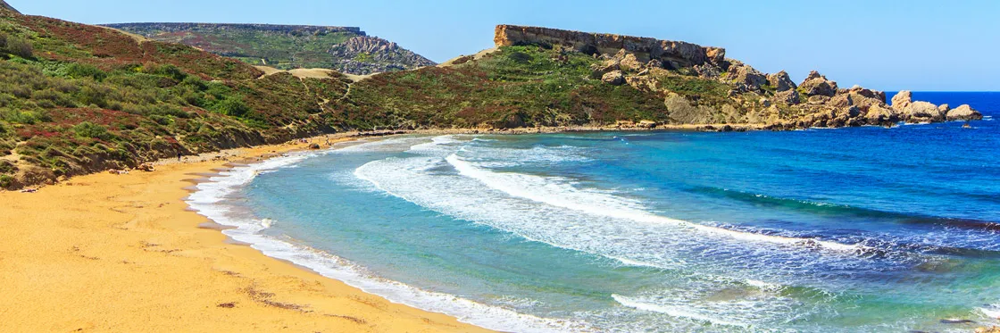
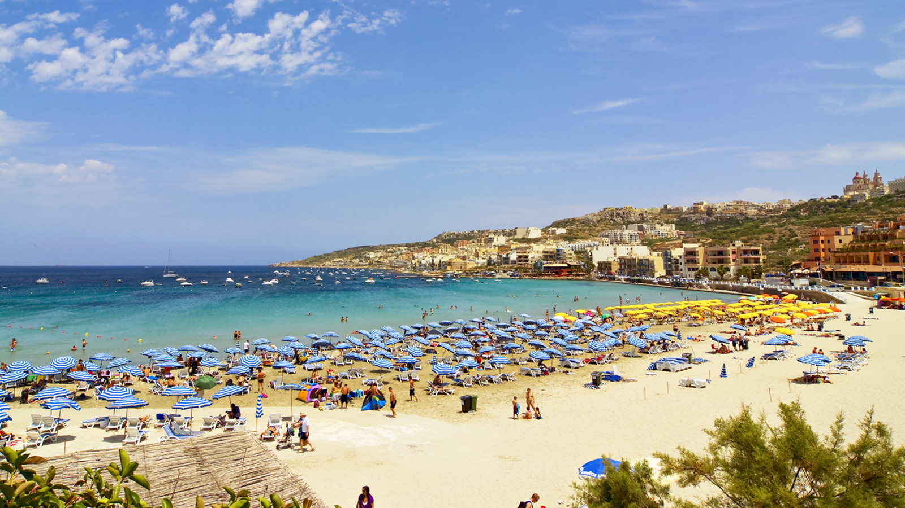
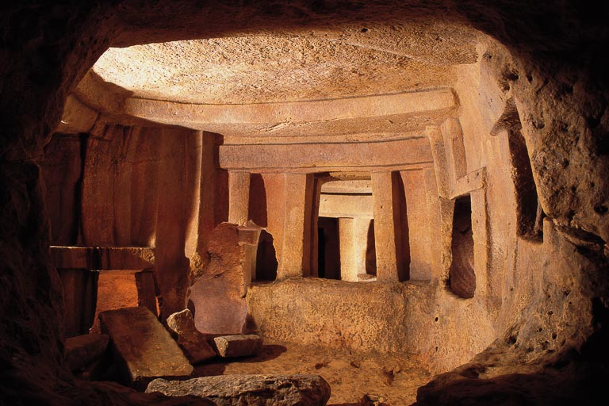
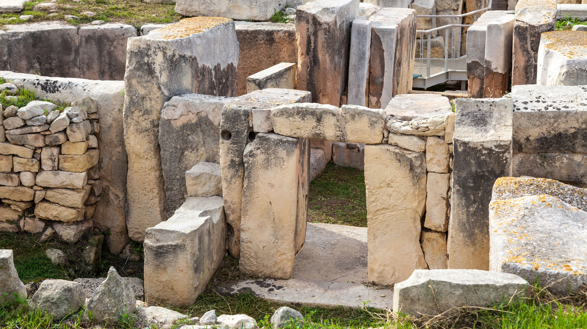

Información general
Malta, compuesto por un archipélago, se encuentra situada en el mar Mediterráno, al sur de Italia y al norte de Libia. Es un popular destino turístico con un clima cálido, numerosas áreas recreativas y monumentos arquitectónicos e históricos, incluidos tres sitios del Patrimonio Mundial de la UNESCO.

Playas
Golden Bay
Esta es sin duda una de las playas de arena más populares de toda la isla de Malta, no sólo por su extensión sino también porque está totalmente equipada para los turistas. Perfecta para aquellos que les gusta caminar, ya que a tan solo 5 minutes se encuentra la playa de Ghajn Tuffieha Bay.

Ghajn Tuffieha Bay
Esta hermosa playa es también de arena y es idónea para aquellas personas a las que les gusta la tranquilidad. Suele ser un sitio muy tranquilo y tiene una preciosa superficie sobre la que disfrutarás de fantásticos paseos.

Ghadira Bay
Esta es una playa de grandes dimensiones que se encuentra al lado de Mellieha. Podrás alquilar sombrillas y tumbonas para tumbarte bajo el sol y seguramente disfrutarás de una tarde fabulosa.

Gastronomía
La cocina maltesa nace de la larga relación entre los malteses y los españoles que han gobernado las islas. La fusión de sabores le ha dado a su cocina un sabor distintivo dentro de la cocina mediterránea. Aunque cuenta con muchos platos originarios, muchas recetas presentan una fuerte influencia culinaria italiana (especialmente siciliana) y turca. Algunos platos típicamente malteses son ftira biż-żejt, ġbejniet, pastizzi y Ross il-Forn. El froż-del, más bien conocida como la comida de los presos, es un plato muy típico entre los malteses.

Patrimonios de la humanidad
Hipogeo de Hal Saflieni
El Hipogeo de Hal Saflieni es el único templo subterráneo prehistórico conocido; fue excavado hacia el 2500 a. C. Se considera que su primera función fue la de santuario y que ulteriormente, pero aún en tiempos prehistóricos, se convirtió en una necrópolis. Está situado en extremo del municipio de Paola, en el sureste de la isla de Malta. Fue declarado Patrimonio de la Humanidad por la Unesco en 1980.

La Valetta
La historia de La Valetta, capital de la República de Malta, está indisolublemente unida a la de la Orden Militar y Hospitalaria de San Juan de Jerusalén, conocida también por el nombre de Orden de los Caballeros de Malta. Antes de ser gobernada por los caballeros, la ciudad estuvo sucesivamente bajo la dominación de fenicios, griegos, cartagineses, romanos, bizantinos y árabes. Concentrados en una superficie de tan sólo 55 hectáreas, los 320 monumentos de La Valetta hacen que su centro histórico sea uno de los más densos del mundo.

Templos megalíticos
Los templos megalíticos de Malta constituyen la manifestación de una cultura megalítica singular que se desarrolló en las islas de Malta y Gozo entre los años 5.000 a. C. y 2.500 a. C. y que se ha venido en denominar la Edad de los Templos. Su antigüedad es mayor que la de las pirámides egipcias y constituyen las construcción más antigua que se conoce de estas características en el mundo.
